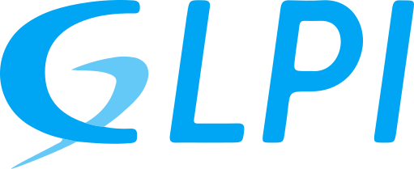
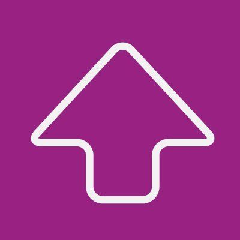
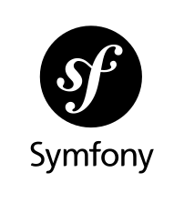

Mes réalisations en formation, en entreprise et sur mon temps personnel,
avec les compétences du bloc 1 qu'elles mobilisent.
DWS
Entreprise · Renault · 2024-2025
Digital Workstation (DWS)
Installation et configuration de 10 tablettes en bout des lignes de presse (emboutissage)
pour les auditeurs et conducteurs de ligne : OK Start et plan de maintenance autonome
digitalisés, alertes HelpCall envoyées aux chefs d'unité.
Application de quiz en temps réel, façon Kahoot, pour animer les dojos de sensibilisation
aux économies d'énergie : tablettes joueurs, interface d'administration et écran de projection.
PHP
MySQL
JavaScript
Sessions
Documentation à venir
SUP
Entreprise · Renault · 2026
Supervision applicative
En cours
Outil qui surveille l'état des applications du service et historise les pannes,
pour réagir plus vite et garder une trace des incidents.
PHP
MySQL
Supervision
Documentation à venir
APP
Entreprise · Renault · 2025-2027
Pilotage du parc applicatif
Hébergement et maintenance des applications développées par les apprentis du service,
définition des standards de développement (nommage, structure, Git) et animation
d'un point d'équipe hebdomadaire.
Hébergement
Standards
Git
Animation
Documentation à venir
VOK
Entreprise · Renault
VOK
En cours
Création d'un outil de suivi de production pour les équipes de l'usine.
Suivi de production
Documentation à venir
BI
Entreprise · Renault · 2023-2025
Tableaux de bord Looker
Tableaux de bord pour visualiser la production, les pannes et les arrêts de production.
Looker
Données
E-E
Formation · Ynov · projet de groupe
E-enseignement
Site dynamique de cours et d'exercices pour la promo, réalisé en équipe.
Mon rôle : rédaction du cahier des charges (besoins, arborescence, besoins fonctionnels).
Cahier des charges
PHP / MySQL
Trello
GitHub
Documentation à venir
Formation · Ynov
Serveur Apache 2
Installation et configuration d'un serveur web Apache 2 sous Linux, accessible en HTTPS.
Linux
Apache 2
HTTPS
Documentation à venir

Formation · Ynov
GLPI
Mise en place de GLPI pour l'inventaire et la gestion du parc informatique.
Gestion de parc
Inventaire
Documentation à venir

Formation · Ynov
OCS Inventory
Déploiement d'OCS Inventory pour remonter l'inventaire matériel et logiciel des postes.
Inventaire
Agents
Documentation à venir

Formation · Ynov
Symfony
Découverte du framework PHP Symfony pour structurer une application web.
PHP
Framework
MVC
Documentation à venir
Formation
Station météo
Remplacement d'une carte mère hors service par une carte Arduino pour refaire fonctionner les capteurs d'une station météo.
Arduino
Capteurs
Dépannage
Documentation à venir
AUTO
Personnel
Site de vente automobile
En cours
Site de gestion de vente de véhicules : base de données, formulaires et authentification.
PHP
MySQL
Authentification
FNF
Personnel
Mini-jeu FNF
En cours
Création d'un mini-jeu de rythme inspiré de Friday Night Funkin'.
Lua
Jeu vidéo
WEB
Personnel
Ce portfolio
Site statique en HTML, CSS et JavaScript, versionné sur GitHub et consultable en ligne par le jury.